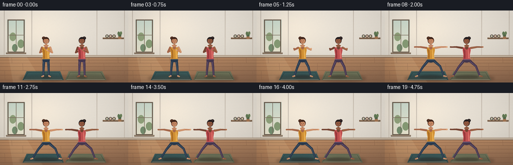
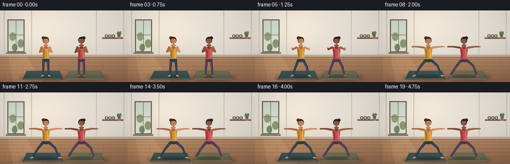
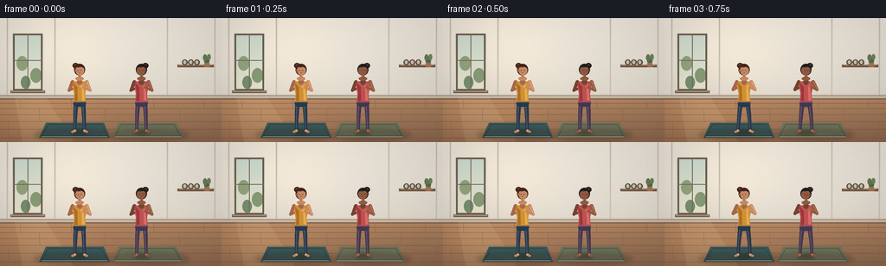

CODING AGENTS AS PIXEL WORLD MODELS
traex/DeepSeek-V4.1-Flash · instance_preservation_0031
点击播放 · 原生 RGB 像素
逐轮保存的候选
回放视频、检查图与代码变化。
每份候选均可单独播放。实际图片检查记录在下方工具轨迹中。
候选 01播放与检查图
点击播放 · 原生 RGB 像素

展开代码变化
--- 上一保存版本
+++ 本次保存版本
@@ -0,0 +1,496 @@
+from __future__ import annotations
+
+import math
+from pathlib import Path
+
+import numpy as np
+from PIL import Image, ImageDraw, ImageFilter
+
+import artifact_io
+
+
+WIDTH = 256
+HEIGHT = 144
+FRAMES = 20
+FPS = 4.0
+SCALE = 4
+
+
+def _mix(a: tuple[float, float, float], b: tuple[float, float, float], t: float):
+ return tuple(round(a[i] * (1.0 - t) + b[i] * t) for i in range(3))
+
+
+def _smoothstep(value: float) -> float:
+ value = min(1.0, max(0.0, value))
+ return value * value * (3.0 - 2.0 * value)
+
+
+def _point(a, b, t):
+ return (a[0] * (1.0 - t) + b[0] * t, a[1] * (1.0 - t) + b[1] * t)
+
+
+def _scaled(points):
+ return [(round(x * SCALE, 2), round(y * SCALE, 2)) for x, y in points]
+
+
+def _ellipse(draw: ImageDraw.ImageDraw, center, radii, fill):
+ cx, cy = center
+ rx, ry = radii
+ draw.ellipse(
+ (
+ round((cx - rx) * SCALE, 2),
+ round((cy - ry) * SCALE, 2),
+ round((cx + rx) * SCALE, 2),
+ round((cy + ry) * SCALE, 2),
+ ),
+ fill=fill,
+ )
+
+
+def _capsule(draw: ImageDraw.ImageDraw, start, end, start_width, end_width, fill):
+ x0, y0 = start[0] * SCALE, start[1] * SCALE
+ x1, y1 = end[0] * SCALE, end[1] * SCALE
+ dx, dy = x1 - x0, y1 - y0
+ length = math.hypot(dx, dy)
+ if length < 1e-5:
+ _ellipse(draw, start, (start_width / 2.0, start_width / 2.0), fill)
+ return
+ nx, ny = -dy / length, dx / length
+ h0, h1 = start_width * SCALE / 2.0, end_width * SCALE / 2.0
+ polygon = [
+ (x0 + nx * h0, y0 + ny * h0),
+ (x1 + nx * h1, y1 + ny * h1),
+ (x1 - nx * h1, y1 - ny * h1),
+ (x0 - nx * h0, y0 - ny * h0),
+ ]
+ draw.polygon(polygon, fill=fill)
+ draw.ellipse((x0 - h0, y0 - h0, x0 + h0, y0 + h0), fill=fill)
+ draw.ellipse((x1 - h1, y1 - h1, x1 + h1, y1 + h1), fill=fill)
+
+
+def _make_background() -> Image.Image:
+ yy = np.arange(HEIGHT * SCALE, dtype=np.float32)[:, None] / (HEIGHT * SCALE - 1)
+ xx = np.arange(WIDTH * SCALE, dtype=np.float32)[None, :] / (WIDTH * SCALE - 1)
+
+ top = np.array([237, 230, 219], dtype=np.float32)
+ bottom = np.array([211, 205, 194], dtype=np.float32)
+ wall = top[None, None, :] * (1.0 - yy[:, :, None]) + bottom[None, None, :] * yy[:, :, None]
+ wall = np.repeat(wall, WIDTH * SCALE, axis=1)
+
+ glow = np.exp(-(((xx - 0.28) / 0.34) ** 2 + ((yy - 0.26) / 0.44) ** 2) * 1.7)
+ wall += glow[:, :, None] * np.array([16.0, 12.0, 6.0], dtype=np.float32)
+
+ floor_start = int(91.5 * SCALE)
+ floor_t = np.clip(
+ (np.arange(HEIGHT * SCALE, dtype=np.float32) - floor_start)
+ / max(1, HEIGHT * SCALE - floor_start),
+ 0.0,
+ 1.0,
+ )
+ wood_near = np.array([177, 134, 99], dtype=np.float32)
+ wood_far = np.array([139, 103, 79], dtype=np.float32)
+ floor = wood_near[None, :] * (1.0 - floor_t[:, None]) + wood_far[None, :] * floor_t[:, None]
+ floor = np.repeat(floor[:, None, :], WIDTH * SCALE, axis=1)
+ floor += np.exp(-(((xx - 0.18) / 0.27) ** 2 + ((yy - 0.83) / 0.24) ** 2))[:, :, None] * np.array(
+ [22.0, 14.0, 5.0], dtype=np.float32
+ )
+
+ image = wall.copy()
+ image[floor_start:] = floor[floor_start:]
+ image = Image.fromarray(np.clip(image, 0, 255).astype(np.uint8))
+ draw = ImageDraw.Draw(image)
+
+ # Quiet wall panelling keeps the studio readable without competing with the figures.
+ panel_color = (213, 204, 192)
+ shadow_color = (195, 184, 170)
+ for x in (8, 63, 193, 248):
+ draw.line(_scaled([(x, 0), (x, 90)]), fill=shadow_color, width=1 * SCALE)
+ draw.line(_scaled([(x + 0.8, 0), (x + 0.8, 90)]), fill=panel_color, width=1 * SCALE)
+
+ # Soft, tall window with a muted garden beyond it.
+ glass_top = (205, 220, 207)
+ glass_bottom = (231, 226, 204)
+ for y in range(18, 85):
+ t = (y - 18) / 67.0
+ draw.rectangle(
+ (round(14.0 * SCALE), round(y * SCALE), round(50.0 * SCALE), round((y + 1) * SCALE)),
+ fill=_mix(glass_top, glass_bottom, t),
+ )
+ draw.ellipse(_scaled([(24, 67), (35, 82)]), fill=(119, 143, 113))
+ draw.ellipse(_scaled([(35, 58), (48, 75)]), fill=(136, 156, 119))
+ draw.ellipse(_scaled([(19, 44), (32, 61)]), fill=(147, 164, 126))
+ draw.rectangle(_scaled([(15, 18), (49, 84)]), outline=(109, 95, 81), width=2 * SCALE)
+ draw.line(_scaled([(32, 18), (32, 84)]), fill=(120, 106, 91), width=1 * SCALE)
+ draw.line(_scaled([(15, 49), (49, 49)]), fill=(126, 111, 95), width=1 * SCALE)
+ draw.rectangle(_scaled([(12, 84), (52, 87)]), fill=(124, 106, 89))
+ draw.line(_scaled([(13, 85), (51, 85)]), fill=(193, 174, 148), width=3)
+
+ # A small shelf of rolled mats gives the room an unmistakable yoga-studio cue.
+ draw.rectangle(_scaled([(205, 54), (247, 57)]), fill=(117, 92, 71))
+ draw.line(_scaled([(207, 54.6), (245, 54.6)]), fill=(183, 150, 116), width=3)
+ for cx, color in ((213.5, (107, 129, 120)), (220.5, (156, 112, 102)), (227.5, (120, 118, 92))):
+ draw.ellipse(
+ (
+ round((cx - 3.2) * SCALE),
+ round(48.0 * SCALE),
+ round((cx + 3.2) * SCALE),
+ round(54.5 * SCALE),
+ ),
+ fill=color,
+ outline=(82, 71, 62),
+ width=1 * SCALE,
+ )
+ _ellipse(draw, (cx, 51.2), (1.4, 2.2), (210, 196, 170))
+ _ellipse(draw, (239.0, 49.5), (3.2, 3.0), (85, 106, 78))
+ _ellipse(draw, (237.0, 46.0), (2.4, 3.8), (100, 123, 87))
+ _ellipse(draw, (241.5, 45.2), (2.2, 3.4), (109, 132, 91))
+ draw.rectangle(_scaled([(236, 52), (242, 57)]), fill=(164, 119, 84))
+
+ # Baseboard and sparse floor seams.
+ draw.rectangle(_scaled([(0, 89.5), (256, 94)]), fill=(197, 181, 161))
+ draw.line(_scaled([(0, 89.5), (256, 89.5)]), fill=(164, 145, 124), width=4)
+ draw.line(_scaled([(0, 93.8), (256, 93.8)]), fill=(124, 95, 74), width=5)
+
+ floor_lines = (125, 91, 69)
+ for y in (99, 105, 112, 120, 129, 139):
+ draw.line(_scaled([(0, y), (256, y)]), fill=floor_lines, width=2)
+ for x, y0, y1 in (
+ (23, 94, 105),
+ (82, 94, 105),
+ (177, 94, 105),
+ (235, 94, 105),
+ (45, 105, 120),
+ (121, 105, 120),
+ (207, 105, 120),
+ (9, 120, 139),
+ (92, 120, 139),
+ (164, 120, 139),
+ (248, 120, 139),
+ ):
+ draw.line(_scaled([(x, y0), (x + 0.8, y1)]), fill=(143, 105, 79), width=2)
+
+ # Window light falling across the left edge of the floor.
+ light = Image.new("RGBA", image.size, (0, 0, 0, 0))
+ light_draw = ImageDraw.Draw(light)
+ light_draw.polygon(
+ _scaled([(17, 92), (53, 92), (85, 144), (26, 144)]),
+ fill=(255, 236, 189, 24),
+ )
+ image = Image.alpha_composite(image.convert("RGBA"), light).convert("RGB")
+ return image
+
+
+def _mats(image: Image.Image):
+ draw = ImageDraw.Draw(image)
+ mats = [
+ ([(53, 121.5), (120, 121.5), (127, 139), (45, 139)], (62, 91, 91), (45, 72, 73)),
+ ([(137, 121.5), (204, 121.5), (212, 139), (130, 139)], (112, 116, 91), (82, 89, 71)),
+ ]
+ for outer, inner, edge in mats:
+ draw.polygon(_scaled(outer), fill=inner)
+ inset = [
+ (outer[0][0] + 3, outer[0][1] + 2),
+ (outer[1][0] - 3, outer[1][1] + 2),
+ (outer[2][0] - 3, outer[2][1] - 2),
+ (outer[3][0] + 3, outer[3][1] - 2),
+ ]
+ draw.line(_scaled(inset + [inset[0]]), fill=edge, width=3)
+
+ shadow = Image.new("RGBA", image.size, (0, 0, 0, 0))
+ sd = ImageDraw.Draw(shadow)
+ sd.ellipse(_scaled([(39, 128), (133, 143)]), fill=(50, 38, 31, 62))
+ sd.ellipse(_scaled([(124, 128), (219, 143)]), fill=(50, 38, 31, 58))
+ shadow = shadow.filter(ImageFilter.GaussianBlur(2.4 * SCALE))
+ image.alpha_composite(shadow)
+
+
+def _pose(cx: float, frame: int, phase_offset: float):
+ transition = _smoothstep((frame - 2.0) / 6.0)
+
+ mountain = {
+ "hip": (cx, 99.2),
+ "chest": (cx, 80.0),
+ "neck": (cx, 69.6),
+ "head": (cx, 60.0),
+ "shoulder_l": (cx - 8.2, 74.2),
+ "shoulder_r": (cx + 8.2, 74.2),
+ "elbow_l": (cx - 12.2, 84.0),
+ "elbow_r": (cx + 12.2, 84.0),
+ "hand_l": (cx - 2.0, 79.5),
+ "hand_r": (cx + 2.0, 79.5),
+ "hip_l": (cx - 4.2, 98.8),
+ "hip_r": (cx + 4.2, 98.8),
+ "knee_l": (cx - 5.0, 114.3),
+ "knee_r": (cx + 5.0, 114.3),
+ "ankle_l": (cx - 5.5, 130.8),
+ "ankle_r": (cx + 5.5, 130.8),
+ "toe_l": (cx - 8.0, 132.1),
+ "toe_r": (cx + 8.0, 132.1),
+ }
+ warrior = {
+ "hip": (cx, 100.2),
+ "chest": (cx, 80.4),
+ "neck": (cx, 70.0),
+ "head": (cx, 60.2),
+ "shoulder_l": (cx - 9.0, 74.8),
+ "shoulder_r": (cx + 9.0, 74.8),
+ "elbow_l": (cx - 20.5, 73.0),
+ "elbow_r": (cx + 20.5, 73.0),
+ "hand_l": (cx - 32.0, 73.0),
+ "hand_r": (cx + 32.0, 73.0),
+ "hip_l": (cx - 4.8, 99.5),
+ "hip_r": (cx + 4.8, 99.5),
+ "knee_l": (cx - 16.2, 113.5),
+ "knee_r": (cx + 18.5, 111.4),
+ "ankle_l": (cx - 27.0, 130.7),
+ "ankle_r": (cx + 26.2, 130.8),
+ "toe_l": (cx - 30.0, 131.8),
+ "toe_r": (cx + 30.2, 131.9),
+ }
+ points = {key: _point(mountain[key], warrior[key], transition) for key in mountain}
+
+ breath = math.sin(2.0 * math.pi * (frame / 18.0) + phase_offset)
+ settle = _smoothstep((frame - 6.0) / 7.0)
+ for key in ("chest", "neck", "head", "shoulder_l", "shoulder_r"):
+ x, y = points[key]
+ points[key] = (x, y - breath * 0.55 * settle)
+ for key in ("elbow_l", "elbow_r", "hand_l", "hand_r"):
+ x, y = points[key]
+ points[key] = (x, y - breath * 0.35 * settle)
+ sway = math.sin(2.0 * math.pi * frame / 20.0 + phase_offset * 0.6) * 0.35 * settle
+ points["hip"] = (points["hip"][0] + sway, points["hip"][1])
+ points["chest"] = (points["chest"][0] + sway * 0.8, points["chest"][1])
+ points["neck"] = (points["neck"][0] + sway * 0.6, points["neck"][1])
+ points["head"] = (points["head"][0] + sway * 0.45, points["head"][1])
+ return points, transition
+
+
+def _draw_person(image: Image.Image, cx: float, frame: int, palette, phase_offset: float, facing: int):
+ points, transition = _pose(cx, frame, phase_offset)
+ shadow = Image.new("RGBA", image.size, (0, 0, 0, 0))
+ sd = ImageDraw.Draw(shadow)
+ spread = 10.0 + 14.0 * transition
+ sd.ellipse(
+ _scaled([(cx - spread, 129.8), (cx + spread, 136.2)]),
+ fill=(41, 31, 28, 92),
+ )
+ sd.ellipse(
+ _scaled([(cx - spread * 0.75, 132.2), (cx + spread * 0.75, 135.4)]),
+ fill=(35, 27, 24, 78),
+ )
+ shadow = shadow.filter(ImageFilter.GaussianBlur(1.5 * SCALE))
+ image.alpha_composite(shadow)
+
+ draw = ImageDraw.Draw(image)
+ skin = palette["skin"]
+ skin_shadow = palette["skin_shadow"]
+ skin_light = palette["skin_light"]
+ top = palette["top"]
+ top_shadow = palette["top_shadow"]
+ top_light = palette["top_light"]
+ leg = palette["leg"]
+ leg_shadow = palette["leg_shadow"]
+ leg_light = palette["leg_light"]
+ hair = palette["hair"]
+ hair_light = palette["hair_light"]
+
+ # Far arm, then legs, then torso, then near arm.
+ _capsule(draw, points["shoulder_l"], points["elbow_l"], 4.0, 3.3, skin_shadow)
+ _capsule(draw, points["elbow_l"], points["hand_l"], 3.2, 2.5, skin_shadow)
+ _ellipse(draw, points["hand_l"], (1.65, 1.35), skin_shadow)
+
+ for side in ("l", "r"):
+ hip = points[f"hip_{side}"]
+ knee = points[f"knee_{side}"]
+ ankle = points[f"ankle_{side}"]
+ toe = points[f"toe_{side}"]
+ _capsule(draw, hip, knee, 5.3, 4.2, leg)
+ _capsule(draw, knee, ankle, 4.2, 3.2, leg)
+ _capsule(draw, ankle, toe, 3.0, 2.4, skin)
+ _ellipse(draw, toe, (1.8, 1.25), skin)
+ _capsule(
+ draw,
+ (hip[0] - 0.55, hip[1] + 0.7),
+ (knee[0] - 0.45, knee[1] - 0.4),
+ 1.35,
+ 0.9,
+ leg_light,
+ )
+ _capsule(
+ draw,
+ (knee[0] - 0.35, knee[1] + 0.5),
+ (ankle[0] - 0.25, ankle[1] - 0.5),
+ 0.85,
+ 0.55,
+ leg_light,
+ )
+ _ellipse(draw, (ankle[0] + 0.2, ankle[1] - 0.15), (1.25, 1.0), skin_light)
+
+ _ellipse(draw, points["hip"], (7.4, 4.0), leg)
+ draw.rectangle(
+ (
+ round((points["hip"][0] - 7.2) * SCALE),
+ round((points["hip"][1] - 3.0) * SCALE),
+ round((points["hip"][0] + 7.2) * SCALE),
+ round((points["hip"][1] - 1.3) * SCALE),
+ ),
+ fill=leg_light,
+ )
+
+ torso = [
+ (cx - 7.0, 73.9),
+ (cx - 8.0, 79.2),
+ (cx - 6.4, 88.7),
+ (cx - 7.2, 97.4),
+ (cx + 7.2, 97.4),
+ (cx + 6.4, 88.7),
+ (cx + 8.0, 79.2),
+ (cx + 7.0, 73.9),
+ ]
+ torso = [(x + points["chest"][0] - cx, y + points["chest"][1] - 80.4) for x, y in torso]
+ draw.polygon(_scaled(torso), fill=top)
+ draw.polygon(
+ _scaled(
+ [
+ (cx - 7.4, 74.8),
+ (cx - 5.1, 86.0),
+ (cx - 5.8, 96.2),
+ (cx - 2.5, 96.2),
+ (cx - 2.7, 80.0),
+ ]
+ ),
+ fill=top_shadow,
+ )
+ draw.polygon(
+ _scaled(
+ [
+ (cx + 3.7, 76.0),
+ (cx + 5.1, 86.5),
+ (cx + 5.8, 95.7),
+ (cx + 2.8, 95.7),
+ (cx + 2.6, 80.0),
+ ]
+ ),
+ fill=top_light,
+ )
+ neckline = [(cx - 3.9, 73.4), (cx + 3.9, 73.4), (cx + 2.2, 76.8), (cx, 78.0), (cx - 2.2, 76.8)]
+ draw.polygon(_scaled(neckline), fill=skin)
+
+ _capsule(draw, points["shoulder_r"], points["elbow_r"], 4.1, 3.3, skin)
+ _capsule(draw, points["elbow_r"], points["hand_r"], 3.2, 2.5, skin)
+ _ellipse(draw, points["hand_r"], (1.7, 1.4), skin_light)
+ _capsule(
+ draw,
+ (points["shoulder_r"][0] + 0.35, points["shoulder_r"][1] - 0.3),
+ (points["elbow_r"][0] + 0.3, points["elbow_r"][1] - 0.35),
+ 1.2,
+ 0.75,
+ skin_light,
+ )
+
+ _capsule(draw, points["neck"], (points["neck"][0], points["neck"][1] + 5.1), 5.0, 5.6, skin_shadow)
+ _ellipse(draw, (points["neck"][0], points["neck"][1] + 0.7), (4.8, 2.2), skin)
+
+ hx, hy = points["head"]
+ bun_x = hx + facing * 4.7
+ _ellipse(draw, (bun_x, hy - 4.8), (3.5, 3.2), hair)
+ _ellipse(draw, (bun_x - facing * 0.4, hy - 5.3), (2.0, 1.5), hair_light)
+ _ellipse(draw, (hx, hy - 0.2), (6.3, 6.8), hair)
+ _ellipse(draw, (hx - facing * 0.3, hy + 0.8), (5.05, 5.55), skin)
+ _ellipse(draw, (hx + facing * 4.7, hy + 0.8), (1.15, 1.55), skin_shadow)
+ fringe = [
+ (hx - 5.0, hy - 3.1),
+ (hx - 3.0, hy - 5.6),
+ (hx + 2.6, hy - 5.4),
+ (hx + 4.8, hy - 2.0),
+ (hx + 2.2, hy - 3.4),
+ (hx - 1.2, hy - 2.7),
+ ]
+ draw.polygon(_scaled(fringe), fill=hair)
+ _capsule(draw, (hx - 4.7, hy - 2.6), (hx - 1.1, hy - 3.5), 0.8, 0.55, hair_light)
+
+ # Small facial marks are deliberately restrained at this scale.
+ eye_y = hy + 0.7
+ for ex in (hx - 1.75, hx + 1.75):
+ _ellipse(draw, (ex, eye_y), (0.43, 0.38), (61, 42, 38))
+ draw.line(_scaled([(hx - 0.15, hy + 1.4), (hx - 0.35, hy + 2.3)]), fill=skin_shadow, width=2)
+ draw.line(_scaled([(hx - 1.0, hy + 3.35), (hx + 0.9, hy + 3.25)]), fill=(116, 66, 61), width=2)
+ _ellipse(draw, (hx - 3.2, hy + 2.0), (0.7, 0.45), palette["blush"])
+
+ # A narrow rim light separates the far silhouette from the wall.
+ if transition > 0.35:
+ alpha = int(80 * min(1.0, (transition - 0.35) / 0.65))
+ rim = Image.new("RGBA", image.size, (0, 0, 0, 0))
+ rd = ImageDraw.Draw(rim)
+ rd.line(_scaled([(cx + 8.6, 76.0), (cx + 7.1, 96.5)]), fill=(255, 244, 215, alpha), width=3)
+ image.alpha_composite(rim)
+
+
+def _render_frame(frame: int) -> np.ndarray:
+ image = _make_background().convert("RGBA")
+ _mats(image)
+
+ palettes = [
+ {
+ "skin": (197, 137, 101),
+ "skin_shadow": (166, 105, 76),
+ "skin_light": (219, 164, 122),
+ "top": (208, 145, 55),
+ "top_shadow": (173, 111, 41),
+ "top_light": (230, 173, 80),
+ "leg": (43, 59, 78),
+ "leg_shadow": (33, 44, 61),
+ "leg_light": (73, 89, 108),
+ "hair": (66, 40, 30),
+ "hair_light": (101, 61, 42),
+ "blush": (204, 112, 92),
+ },
+ {
+ "skin": (145, 91, 66),
+ "skin_shadow": (117, 69, 52),
+ "skin_light": (174, 115, 82),
+ "top": (191, 82, 82),
+ "top_shadow": (153, 57, 62),
+ "top_light": (218, 112, 105),
+ "leg": (71, 57, 79),
+ "leg_shadow": (51, 42, 62),
+ "leg_light": (104, 84, 112),
+ "hair": (37, 31, 32),
+ "hair_light": (70, 53, 51),
+ "blush": (173, 80, 75),
+ },
+ ]
+ _draw_person(image, 92.0, frame, palettes[0], 0.0, -1)
+ _draw_person(image, 163.5, frame, palettes[1], 0.35, 1)
+
+ # Thin mat edges stay visible beneath the feet.
+ draw = ImageDraw.Draw(image)
+ draw.line(_scaled([(48, 137.5), (124, 137.5)]), fill=(209, 192, 165), width=2)
+ draw.line(_scaled([(133, 137.5), (209, 137.5)]), fill=(209, 192, 165), width=2)
+
+ image = image.convert("RGB").resize((WIDTH, HEIGHT), Image.Resampling.LANCZOS)
+ pixels = np.asarray(image, dtype=np.float32)
+
+ yy, xx = np.mgrid[0:HEIGHT, 0:WIDTH]
+ nx = (xx - WIDTH * 0.5) / (WIDTH * 0.5)
+ ny = (yy - HEIGHT * 0.5) / (HEIGHT * 0.5)
+ vignette = 1.0 - 0.095 * np.clip(nx * nx * 0.68 + ny * ny * 0.54, 0.0, 1.0)
+ pixels *= vignette[:, :, None]
+ pixels = (pixels - 128.0) * 1.025 + 128.0
+
+ # Deterministic, nearly invisible grain avoids a flat digital surface.
+ rng = np.random.default_rng(7031 + frame)
+ grain = rng.normal(0.0, 0.65, size=(HEIGHT, WIDTH, 1))
+ pixels += grain
+ return np.clip(pixels, 0, 255).astype(np.uint8)
+
+
+def main() -> None:
+ frames = np.stack([_render_frame(index) for index in range(FRAMES)], axis=0)
+ case_dir = Path(__file__).resolve().parent
+ artifact_io.save(frames, case_dir)
+ print(f"Saved {frames.shape[0]} frames at {frames.shape[2]}x{frames.shape[1]} to {case_dir}")
+
+
+if __name__ == "__main__":
+ main()
候选 02播放与检查图
点击播放 · 原生 RGB 像素


展开代码变化
--- 上一保存版本
+++ 本次保存版本
@@ -249,15 +249,15 @@
}
points = {key: _point(mountain[key], warrior[key], transition) for key in mountain}
- breath = math.sin(2.0 * math.pi * (frame / 18.0) + phase_offset)
+ breath = math.sin(2.0 * math.pi * (frame / 22.0) + phase_offset)
settle = _smoothstep((frame - 6.0) / 7.0)
for key in ("chest", "neck", "head", "shoulder_l", "shoulder_r"):
x, y = points[key]
- points[key] = (x, y - breath * 0.55 * settle)
+ points[key] = (x, y - breath * 0.32 * settle)
for key in ("elbow_l", "elbow_r", "hand_l", "hand_r"):
x, y = points[key]
- points[key] = (x, y - breath * 0.35 * settle)
- sway = math.sin(2.0 * math.pi * frame / 20.0 + phase_offset * 0.6) * 0.35 * settle
+ points[key] = (x, y - breath * 0.22 * settle)
+ sway = math.sin(2.0 * math.pi * frame / 24.0 + phase_offset * 0.6) * 0.18 * settle
points["hip"] = (points["hip"][0] + sway, points["hip"][1])
points["chest"] = (points["chest"][0] + sway * 0.8, points["chest"][1])
points["neck"] = (points["neck"][0] + sway * 0.6, points["neck"][1])
@@ -427,7 +427,16 @@
def _render_frame(frame: int) -> np.ndarray:
+ camera_push = 1.0 + 0.010 * _smoothstep((frame - 7.0) / 12.0)
+ crop_w = WIDTH * SCALE / camera_push
+ crop_h = HEIGHT * SCALE / camera_push
+ left = (WIDTH * SCALE - crop_w) * 0.5
+ top = (HEIGHT * SCALE - crop_h) * 0.52
+
image = _make_background().convert("RGBA")
+ image = image.crop((left, top, left + crop_w, top + crop_h)).resize(
+ (WIDTH * SCALE, HEIGHT * SCALE), Image.Resampling.BICUBIC
+ )
_mats(image)
palettes = [
可观测工具轨迹
实际执行的命令与返回图片。
命令 1exit 0
/bin/bash -c "sed -n '1,240p' prompt.txt"
命令 2exit 0
/bin/bash -c "sed -n '1,280p' GENERATION_RULES.md"
命令 3exit 0
/bin/bash -c 'cat task_spec.json'
命令 4exit 0
/bin/bash -c "find . -maxdepth 2 -type f -not -path './.git/*' -printf '%p\\n' | sort"
命令 5exit 0
/bin/bash -c "sed -n '1,280p' artifact_io.py"
命令 6exit 0
/bin/bash -c "python - <<'PY'
import PIL, numpy
print('Pillow', PIL.__version__)
print('numpy', numpy.__version__)
try:
import scipy; print('scipy', scipy.__version__)
except Exception as e: print('scipy unavailable', e)
PY"命令 7exit 1
/bin/bash -c 'python generate.py'
命令 8exit 0
/bin/bash -c 'rg -n "width=" generate.py'
命令 9exit 0
/bin/bash -c 'python generate.py'
命令 10exit 0
/bin/bash -c "python - <<'PY'
from pathlib import Path
from PIL import Image
import numpy as np
p=Path('.')
files=sorted((p/'frames').glob('*.png'))
arr=np.stack([np.asarray(Image.open(f)) for f in files])
print('shape', arr.shape, 'dtype', arr.dtype)
print('frames', len(files), 'size', Image.open(files[0]).size)
print('global min/max/mean/std', arr.min(), arr.max(), round(float(arr.mean()),2), round(float(arr.std()),2))
for i in range(1,len(arr)):
d=np.abs(arr[i].astype(np.int16)-arr[i-1].astype(np.int16))
print(f'{i:02d}: mean_delta={d.mean():5.2f} changed_pixels={(d.max(2)>2).mean()*100:5.1f}%')
print('inspection', Image.open('inspection.png').size)
PY"命令 11exit 0
/bin/bash -c "python - <<'PY'
from PIL import Image
im=Image.open('inspection.png')
im.resize((1536,495), Image.Resampling.NEAREST).save('.tmp/inspection_large.png')
print(im.size)
PY"命令 12exit 0
/bin/bash -c "python - <<'PY'
from PIL import Image
import numpy as np
for idx in [0,5,10,15,19]:
im=Image.open(f'frames/{idx:02d}.png').resize((1024,576), Image.Resampling.NEAREST)
im.save(f'.tmp/frame_{idx:02d}_4x.png')
print('saved enlarged previews')
PY"命令 13exit 0
/bin/bash -c 'command -v chafa || true'
命令 14exit 0
/bin/bash -c 'command -v viu || true'
命令 15exit 0
/bin/bash -c 'command -v img2txt || true'
命令 16exit 0
/bin/bash -c 'command -v vlc || true'
命令 17exit 0
/bin/bash -c "python - <<'PY'
from PIL import Image, ImageOps, ImageEnhance
import numpy as np
for idx in [0,9,19]:
im=Image.open(f'frames/{idx:02d}.png').convert('L')
im=ImageOps.autocontrast(im)
im=im.resize((96,54), Image.Resampling.LANCZOS)
a=np.asarray(im)
chars='@%#*+=-:. '
print('\\nFRAME',idx)
for row in a:
print(''.join(chars[min(9, int(v)*10//256)] for v in row))
PY"命令 18exit 0
/bin/bash -c "sed -n '420,500p' generate.py"
命令 19exit 0
/bin/bash -c 'python generate.py'
命令 20exit 0
/bin/bash -c 'python -m py_compile generate.py'
命令 21exit 0
/bin/bash -c "python - <<'PY'
from pathlib import Path
from PIL import Image
import numpy as np
files=sorted(Path('frames').glob('*.png'))
frames=np.stack([np.asarray(Image.open(f).convert('RGB')) for f in files])
assert frames.shape == (20,144,256,3), frames.shape
assert frames.dtype == np.uint8
assert all(np.asarray(Image.open(f)).shape == (144,256,3) for f in files)
assert len({f.read_bytes() for f in files}) == 20
assert Path('pixels.npz').is_file() and Path('index.html').is_file()
z=np.load('pixels.npz')['pixels']
assert z.shape == (144,256,20)
deltas=[float(np.abs(frames[i].astype(np.int16)-frames[i-1].astype(np.int16)).mean()) for i in range(1,20)]
print('validated:', frames.shape, 'unique=',len({f.read_bytes() for f in files}))
print('color range:', int(frames.min()), int(frames.max()), 'mean:', round(float(frames.mean()),2))
print('motion delta range:', round(min(deltas),2), 'to', round(max(deltas),2))
print('artifacts:', ', '.join(p.name for p in [Path('generate.py'),Path('pixels.npz'),Path('index.html'),Path('inspection.png')]))
PY"保存候选 2 份；完成命令 21 次；可验证图片返回 0 张。原始 API 响应与完整日志保留在本地。